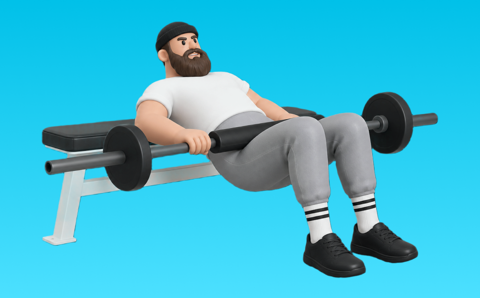

バーベルヒップスラスト

バーベルヒップスラストとは、バーベルを使って「股関節を伸ばす」動作でお尻（臀筋）、太もも裏（ハムストリング）を鍛える種目です。高重量を扱いやすく、筋力を伸ばしやすいのが特徴で、骨盤を持ち上げて臀部を締め、ゆっくり戻す動作を繰り返します。下半身の筋力・筋量アップが期待できます。
- 対象部位
- 脚
- 器具
- バーベル
- 記録形式
- 重量・回数
- 別名
- ヒップスラ / ヒップスラスト / hip thrust / barbell hip thrust
YouTube動画
-
【お尻筋トレ】ヒップスラスト(バーベル)の正しいフォーム・コツ | 「腰が痛い」「やり方がわからない」という方ぜひ！
-
ヒップスラストの効果的なやり方
-
美尻を作るヒップスラストの正しいやり方！ft Rachel Miks
-
【必見】お尻だけに効かせるヒップスラストのやり方
-
ヒップスラストで美尻を作る！やり方&バリエーション!!!
-
筋トレ バーベル ヒップスラスト実演! たるんだおしり 引き締め!! 正しいフォーム伝授! 女性 マシンなし可
-
高重量でお尻を追い込むならヒップスラスト！
YouTubeショート
-
バーベルヒップスラスト（Barbell Hip Thrust）のやり方とフォーム
-
1分で分かる！ヒップスラスト解説 #筋トレ女子
-
脚が太くなるヒップスラスト、今すぐ辞めて！
-
【筋トレ】ヒップスラストのやり方~If you are doing this,please fix it now.~ #筋トレ#パーソナルトレーナー ＃尻トレ＃ヒップスラスト＃HipThrust
-
ヒップスラスト注意点
-
ヒップスラスト脚の位置別鍛えられる場所
-
ヒップスラストはコレ使うと便利 #筋トレ女子
-
みなさんはヒップスラストやってますか？持田選手（おかずもち）とぶーちゃんが大臀筋に効くトレーニングをレクチャーしてくれました！#筋トレ #volix #尻トレ #ちょこっと惜しい #女子トレ
-
[SYNERGY. Fitness Studio] ブーティビルダーヒップスラストのやり方 #筋トレ #エクササイズ #尻トレ
-
ヒップスラスト種目解説🏋️ #パーソナルトレーニング #マッチョ #ヒップスラスト #ヒップアップ
-
バーベルor自重 家でもできる!【ヒップスラスト】のやり方
-
30秒でわかる！反り腰の人がヒップスラストするときの注意点⚠️
-
バーベル・ヒップスラスト｜Hip Thrust on Bench w/BB｜股関節の筋群・動きを鍛えるトレーニング
-
ヒップスラスト（バーベル使用）
-
初心者必見🔰15秒でわかる！スミスマシーンde下半身トレーニング3選🦵
-
強くなるためのヒップスラスト！！#shorts
-
ヒップスラストを完璧にできるようにしましょう！Make your hip trust perfect! #筋トレ #hipthrusts #fitness #おすすめ
-
ヒップスラストのやり方｜お尻に効かせる手順 #筋トレ #筋トレ初心者 #お尻
-
正しいルーマニアンデッドリフト4つのポイント #筋トレ
-
149cm40kg スミスdeスクワット動画
-
筋トレ初心者必見‼︎ヒップアップ種目「ヒップスラスト」#筋トレあるある #お尻
-
ヒップスラスト
-
【ヒップリフト（ダンベル）】これ見るだけでフォーム攻略 #ダイエット #トレーニング #むくみ改善 #下半身トレーニング #脚痩せ
-
【お尻トレ】ブルガリアンスクワットのやり方
-
ワンレッグヒップスラスト（バーベル使用）
-
ヒップスラスト 210kg
動作方法
- 背中を中立に保ち、股関節から動き始める
- もも裏の張りを感じる位置まで下ろす
- 足裏で床を押して立ち上がる
動作ポイント
- 背中を丸めない
- 膝を伸ばしきらない
- バーや重りを体から離しすぎない
ワンポイントアドバイス
- ウォームアップで股関節と足首を動かす
- 高重量の日はセーフティ設定を確認する
目的別回数設定
目的や体力に応じた一般的な目安です。無理のない範囲で調整してください。
- 筋力アップ
- 1〜5回
- 筋肥大
- 6〜12回
- 持久力アップ
- 13〜20回
YouTube動画について
動画はYouTubeの公開情報をもとに表示しています。内容は投稿者によるもので、Biggrによる監修ではありません。
アプリを入手
筋トレやトレーニングの記録はBiggrにお任せください。今すぐ無料で使い始められます。